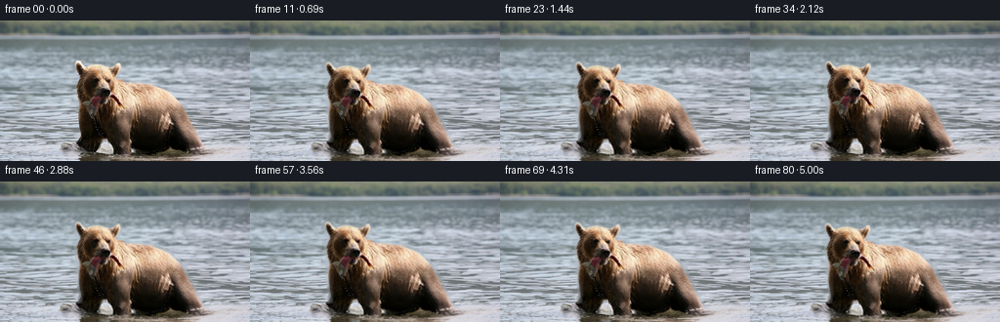
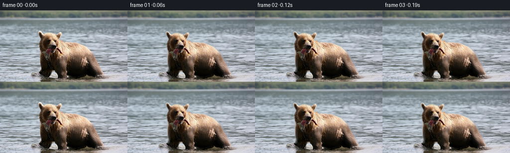
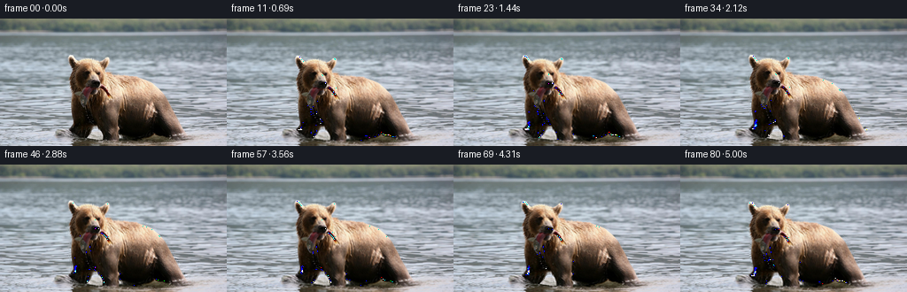
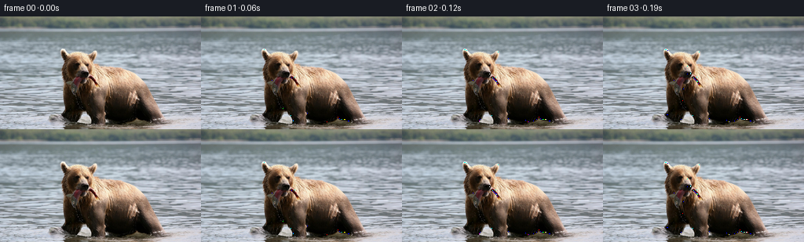

← 本轮 smoke 总览traex/GPT-5.6-Sol · 0872_s4
text · 256×144 · 16 FPS · 81 帧 · 状态 complete · 输出 tokens 12693
原始任务a brown bear in the water with a fish in its mouth
当前保存结果
已保存候选与代码修改
这里按时间展示外部捕获的候选，每份均可单独播放。保存新版本不等于完成视觉检查；下方工具证据记录实际看过的图。
候选 01 · 2026-11-08T21:37:41.409345+00:00 · 点开播放与检查图
inspection.png

transition_check.png

代码变化
--- 上一保存版本
+++ 本次保存版本
@@ -0,0 +1,128 @@
+"""Create a restrained, photographic cinemagraph from the supplied first frame.
+
+The motion is deliberately small: the bear breathes/bobs in the current while
+several differently-sized wave fields travel through the water. Everything is
+sampled from the supplied RGB frame; no external assets are used.
+"""
+from pathlib import Path
+import cv2
+import numpy as np
+from PIL import Image
+import artifact_io
+
+HERE = Path(__file__).resolve().parent
+H, W = 144, 256
+
+
+def largest_bear_mask(rgb):
+ """Locate the contiguous warm-fur silhouette, retaining its dark details."""
+ a = rgb.astype(np.int16)
+ r, g, b = a[..., 0], a[..., 1], a[..., 2]
+ warm = ((r - b > 9) & (r - g > 3) & (r > 35)).astype(np.uint8)
+ # Eliminate the distant bank/sky and isolated warm glints before joining fur.
+ warm[:34] = 0
+ warm[:, :55] = 0
+ warm = cv2.morphologyEx(warm, cv2.MORPH_CLOSE,
+ cv2.getStructuringElement(cv2.MORPH_ELLIPSE, (7, 7)))
+ count, labels, stats, _ = cv2.connectedComponentsWithStats(warm, 8)
+ eligible = [(stats[k, cv2.CC_STAT_AREA], k) for k in range(1, count)
+ if stats[k, cv2.CC_STAT_LEFT] < 150 and stats[k, cv2.CC_STAT_TOP] < 80]
+ lab = max(eligible)[1]
+ rough = (labels == lab).astype(np.uint8)
+ contours, _ = cv2.findContours(rough, cv2.RETR_EXTERNAL, cv2.CHAIN_APPROX_SIMPLE)
+ mask = np.zeros((H, W), np.uint8)
+ cv2.drawContours(mask, contours, -1, 255, cv2.FILLED)
+ # A tiny close makes sure eyes, muzzle and the dark fish remain attached to
+ # the moving photographic layer, rather than being mistaken for water.
+ mask = cv2.morphologyEx(mask, cv2.MORPH_CLOSE,
+ cv2.getStructuringElement(cv2.MORPH_ELLIPSE, (5, 5)))
+ return mask
+
+
+def remap(img, mx, my, border=cv2.BORDER_REFLECT_101):
+ return cv2.remap(img, mx.astype(np.float32), my.astype(np.float32),
+ cv2.INTER_CUBIC, borderMode=border)
+
+
+def make_frames(src):
+ yy, xx = np.mgrid[0:H, 0:W].astype(np.float32)
+ hard = largest_bear_mask(src)
+ # Soft photographic cutout. A wide inpaint is only a hidden clean plate,
+ # revealed by the bear's sub-pixel bob at its perimeter.
+ alpha0 = cv2.GaussianBlur(hard.astype(np.float32) / 255.0, (0, 0), 1.15)
+ clean = cv2.inpaint(src, cv2.dilate(hard, np.ones((5, 5), np.uint8), 1),
+ 7, cv2.INPAINT_TELEA)
+
+ frames = []
+ # Spatial weights: water farther down is nearer and consequently more active.
+ depth = np.clip((yy - 12.0) / 132.0, 0, 1)
+ near = np.clip((yy - 82.0) / 62.0, 0, 1)
+ head = (1.0 / (1.0 + np.exp((xx - 139.0) / 8.0)) *
+ 1.0 / (1.0 + np.exp((yy - 126.0) / 7.0)))
+ fish_tail = (np.exp(-((xx - 114.0) / 24.0) ** 2 - ((yy - 125.0) / 25.0) ** 2)
+ * np.clip((yy - 102.0) / 30.0, 0, 1))
+
+ for i in range(81):
+ t = i / 16.0
+ # Three non-locking current components. Subtracting the phase-zero field
+ # makes the mathematical start coincide with the supplied frame.
+ dxw = depth * (
+ 0.56 * (np.sin(xx * .041 + yy * .022 - t * 1.22) -
+ np.sin(xx * .041 + yy * .022)) +
+ 0.25 * (np.sin(xx * .105 - yy * .031 - t * 2.05) -
+ np.sin(xx * .105 - yy * .031)))
+ dyw = depth * (
+ 0.23 * (np.sin(xx * .052 - t * 1.45) - np.sin(xx * .052)) +
+ 0.10 * (np.sin(xx * .17 + yy * .09 - t * 2.7) -
+ np.sin(xx * .17 + yy * .09)))
+ bg = remap(clean, xx + dxw, yy + dyw)
+
+ # Slow buoyant movement plus a barely visible nod. The smooth head
+ # weighting keeps the mostly-submerged body steady in the heavy water.
+ bob = 0.72 * np.sin(t * 1.48) + 0.18 * np.sin(t * 2.63)
+ sway = 0.26 * np.sin(t * 1.02 + .18) - 0.26 * np.sin(.18)
+ theta = np.deg2rad(0.20) * np.sin(t * 1.18)
+ amount = .55 + .55 * head
+ # Approximate inverse of rotation about the bear's head/neck.
+ sx = xx - sway * amount + theta * (yy - 86.0) * head
+ sy = yy - bob * amount - theta * (xx - 111.0) * head
+ # The hanging fish/fur below the muzzle has a tiny delayed pendulum-like
+ # response; at this amplitude it reads as life rather than rubber warping.
+ sx -= fish_tail * 0.42 * np.sin(t * 1.75 - .30)
+
+ bear = remap(src, sx, sy)
+ a = remap(alpha0, sx, sy)
+ composed = bear.astype(np.float32) * a[..., None] + bg.astype(np.float32) * (1-a[..., None])
+
+ # Refract the lower, submerged part of both animal and water as a single
+ # optical layer. Smooth onset prevents a visible horizontal seam.
+ refr_x = near * (0.42 * (np.sin(xx * .073 + yy * .31 - t * 2.15) -
+ np.sin(xx * .073 + yy * .31)) +
+ 0.16 * (np.sin(xx * .19 - t * 3.0) - np.sin(xx * .19)))
+ refr_y = near * 0.12 * (np.sin(xx * .095 - t * 1.9) - np.sin(xx * .095))
+ composed = remap(composed.astype(np.uint8), xx + refr_x, yy + refr_y)
+
+ # Extremely subtle moving light modulation, limited to the water. This
+ # avoids flat translational motion while preserving original color.
+ shimmer = (np.sin(xx * .047 + yy * .118 - t * 1.7) -
+ np.sin(xx * .047 + yy * .118))
+ water_weight = (1.0 - a) * depth
+ gain = 1.0 + 0.006 * shimmer * water_weight
+ out = np.clip(composed.astype(np.float32) * gain[..., None], 0, 255).astype(np.uint8)
+ frames.append(out)
+
+ frames = np.stack(frames)
+ # Contractual exact first image (also avoids any interpolation roundoff).
+ frames[0] = src
+ return frames
+
+
+def main():
+ src = np.asarray(Image.open(HERE / "first_frame.png").convert("RGB"), dtype=np.uint8)
+ assert src.shape == (H, W, 3)
+ frames = make_frames(src)
+ artifact_io.save(frames, HERE)
+
+
+if __name__ == "__main__":
+ main()
候选 02 · 2026-11-08T21:38:04.336866+00:00 · 点开播放与检查图
inspection.png

transition_check.png

代码变化
--- 上一保存版本
+++ 本次保存版本
@@ -52,6 +52,11 @@
alpha0 = cv2.GaussianBlur(hard.astype(np.float32) / 255.0, (0, 0), 1.15)
clean = cv2.inpaint(src, cv2.dilate(hard, np.ones((5, 5), np.uint8), 1),
7, cv2.INPAINT_TELEA)
+ # Premultiplied foreground is important here. Unlike a naive feathered
+ # paste, it reconstructs the source exactly at zero displacement and avoids
+ # a one-frame halo around the dark wet-fur boundary.
+ foreground = (src.astype(np.float32) -
+ clean.astype(np.float32) * (1.0 - alpha0[..., None]))
frames = []
# Spatial weights: water farther down is nearer and consequently more active.
@@ -90,9 +95,9 @@
# response; at this amplitude it reads as life rather than rubber warping.
sx -= fish_tail * 0.42 * np.sin(t * 1.75 - .30)
- bear = remap(src, sx, sy)
+ fg = remap(foreground, sx, sy)
a = remap(alpha0, sx, sy)
- composed = bear.astype(np.float32) * a[..., None] + bg.astype(np.float32) * (1-a[..., None])
+ composed = fg + bg.astype(np.float32) * (1-a[..., None])
# Refract the lower, submerged part of both animal and water as a single
# optical layer. Smooth onset prevents a visible horizontal seam.
候选 03 · 2026-11-08T21:38:09.060077+00:00 · 点开播放与检查图
inspection.png

transition_check.png

代码变化
代码未变化；重新保存了产物。
可观测工具行为
命令 1 · 2026-11-08T21:35:16.111025+00:00/bin/bash -lc "cat GENERATION_RULES.md && printf '\\n---PROMPT---\\n' && cat prompt.txt"
exit 0 命令 2 · 2026-11-08T21:35:16.378226+00:00/bin/bash -lc "find . -maxdepth 2 -type f -printf '%p\\n' | sort && file first_frame.png"
exit 127 命令 3 · 2026-11-08T21:35:24.237305+00:00/bin/bash -lc "cat task_spec.json; sed -n '1,240p' artifact_io.py"
exit 0 命令 4 · 2026-11-08T21:35:24.751613+00:00/bin/bash -lc "python - <<'PY'
from PIL import Image
import numpy as np
im=np.array(Image.open('first_frame.png').convert('RGB'))
print(im.shape, im.dtype, im.min(),im.max(),im.mean((0,1)),im.std((0,1)))
# report coarse 16x9 block means and luminance/saturation symbolic
h,w,_=im.shape
for y in range(9):
row=[]
for x in range(16):
a=im[y*h//9:(y+1)*h//9,x*w//16:(x+1)*w//16].mean((0,1))
dom='RGB'[np.argmax(a)]
sat=a.max()-a.min(); lum=a.mean()
row.append(f'{dom}{int(lum//32)}{int(sat//32)}')
print(' '.join(row))
# K means if sklearn
from collections import Counter
q=(im//32).reshape(-1,3)
for c,n in Counter(map(tuple,q)).most_common(20): print(c,n)
PY"exit 0 命令 5 · 2026-11-08T21:35:34.994344+00:00/bin/bash -lc "python - <<'PY'
from PIL import Image
import numpy as np
im=np.array(Image.open('first_frame.png').convert('RGB')).astype(float)
# avg per 4x4 classify by hsv-ish and luminance
for yy in range(0,144,4):
out=''
for xx in range(0,256,4):
p=im[yy:yy+4,xx:xx+4].mean((0,1)); r,g,b=p; v=max(p); m=min(p); d=v-m; lum=p.mean()
# classify
if lum<35: c='@'
elif lum<60: c='#'
elif lum<85: c='D'
elif lum<110: c='d'
elif lum<135: c='-'
elif lum<160: c='+'
elif lum<185: c='*'
elif lum<215: c='o'
else:c='.'
if r>g*1.08 and r>b*1.1 and d>15: c='B' if lum<100 else 'b' # brown
elif r>g*1.18 and r>b*1.18: c='R'
elif b>r*1.08 and b>g*1.03: c='~' # blue
elif g>r*1.05 and g>b*1.02:c='g'
out+=c
print(out)
PY"exit 0 命令 6 · 2026-11-08T21:35:47.546512+00:00/bin/bash -lc "python - <<'PY'
try: import cv2; print('cv2',cv2.__version__)
except Exception as e: print(e)
try: import scipy; print('scipy',scipy.__version__)
except Exception as e: print(e)
PY
python - <<'PY'
from PIL import Image
import numpy as np
im=np.array(Image.open('first_frame.png').convert('RGB'))
# print 2x2 blocks only central crop and identify browns based r>b and red dominance, detailed coords
for yy in range(36,144,2):
s=''
for xx in range(60,224,2):
r,g,b=im[yy:yy+2,xx:xx+2].mean((0,1)); mx=max(r,g,b); mn=min(r,g,b); L=(r+g+b)/3
if L<25: c='@'
elif L<45:c='#'
elif L<70:c='D'
elif L<95:c='d'
elif L<125:c='-'
elif L<155:c='+'
elif L<190:c='*'
elif L<225:c='o'
else:c='.'
if r-g>12 and r-b>16: c='B' if L<100 else 'b'
elif r-g>6 and r-b>10:c='r'
elif b-r>10:c='~'
elif g-r>10:c='g'
s+=c
print(f'{yy:03}',s)
PY"exit 0 命令 7 · 2026-11-08T21:36:12.980707+00:00/bin/bash -lc "python - <<'PY'
from PIL import Image
import numpy as np
im=np.array(Image.open('first_frame.png').convert('RGB')).astype(int)
# each char 2x2, x0-120 y80-140, classify hue and lum with detailed classes
for yy in range(80,141,2):
s=''
for xx in range(0,121,2):
r,g,b=im[yy:yy+2,xx:xx+2].mean((0,1)); L=(r+g+b)/3
if L<25:c='0'
elif L<45:c='1'
elif L<65:c='2'
elif L<85:c='3'
elif L<105:c='4'
elif L<125:c='5'
elif L<145:c='6'
elif L<165:c='7'
elif L<185:c='8'
elif L<205:c='9'
elif L<225:c='O'
else:c='.'
if r-g>12 and r-b>16: c='B' if L<110 else 'b'
elif b-r>11 and b-g>2: c='~'
elif g-r>11:c='g'
s+=c
print(f'{yy:03} {s}')
PY"exit 0 命令 8 · 2026-11-08T21:36:27.906661+00:00/bin/bash -lc "python - <<'PY'
import cv2, numpy as np
from PIL import Image
im=np.array(Image.open('first_frame.png'))
r,g,b=cv2.split(im)
for expr,name in [(((r.astype(int)-b)>10)&((r.astype(int)-g)>4),'rb10'),(((r.astype(int)-b)>15)&((r.astype(int)-g)>8),'rb15')]:
u=(expr.astype('uint8')*255); n,l,st,c=cv2.connectedComponentsWithStats(u)
print(name, sorted([tuple(x) for x in st[1:]], key=lambda x:-x[4])[:10])
# edge bounding density every 8
ed=cv2.Canny(im,50,120)
for y in range(0,144,8):
print(y, ['%2d'%int(ed[y:y+8,x:x+8].sum()/255) for x in range(0,256,8)])
PY"exit 0 命令 9 · 2026-11-08T21:36:37.667726+00:00/bin/bash -lc "python - <<'PY'
import cv2,numpy as np
from PIL import Image
im=np.array(Image.open('first_frame.png'))
r,g,b=im[:,:,0].astype(int),im[:,:,1].astype(int),im[:,:,2].astype(int)
m=((r-b>10)&(r-g>4)).astype(np.uint8)
m=cv2.morphologyEx(m,cv2.MORPH_CLOSE,np.ones((5,5),np.uint8))
n,l,st,c=cv2.connectedComponentsWithStats(m)
m=(l==1) if st[1,4]>5000 else (l==np.argmax(st[1:,4])+1)
for y in range(35,144,3):
xs=np.where(m[y])[0]
# all segments
if len(xs):
cuts=np.r_[0,np.where(np.diff(xs)>1)[0]+1,len(xs)]
seg=[f'{xs[a]}-{xs[z-1]}' for a,z in zip(cuts[:-1],cuts[1:]) if z-a>=2]
print(y, ','.join(seg))
PY"exit 0 命令 10 · 2026-11-08T21:37:39.094410+00:00/bin/bash -lc "cat > generate.py <<'PY'
\"\"\"Create a restrained, photographic cinemagraph from the supplied first frame.
The motion is deliberately small: the bear breathes/bobs in the current while
several differently-sized wave fields travel through the water. Everything is
sampled from the supplied RGB frame; no external assets are used.
\"\"\"
from pathlib import Path
import cv2
import numpy as np
from PIL import Image
import artifact_io
HERE = Path(__file__).resolve().parent
H, W = 144, 256
def largest_bear_mask(rgb):
\"\"\"Locate the contiguous warm-fur silhouette, retaining its dark details.\"\"\"
a = rgb.astype(np.int16)
r, g, b = a[..., 0], a[..., 1], a[..., 2]
warm = ((r - b > 9) & (r - g > 3) & (r > 35)).astype(np.uint8)
# Eliminate the distant bank/sky and isolated warm glints before joining fur.
warm[:34] = 0
warm[:, :55] = 0
warm = cv2.morphologyEx(warm, cv2.MORPH_CLOSE,
cv2.getStructuringElement(cv2.MORPH_ELLIPSE, (7, 7)))
count, labels, stats, _ = cv2.connectedComponentsWithStats(warm, 8)
eligible = [(stats[k, cv2.CC_STAT_AREA], k) for k in range(1, count)
if stats[k, cv2.CC_STAT_LEFT] < 150 and stats[k, cv2.CC_STAT_TOP] < 80]
lab = max(eligible)[1]
rough = (labels == lab).astype(np.uint8)
contours, _ = cv2.findContours(rough, cv2.RETR_EXTERNAL, cv2.CHAIN_APPROX_SIMPLE)
mask = np.zeros((H, W), np.uint8)
cv2.drawContours(mask, contours, -1, 255, cv2.FILLED)
# A tiny close makes sure eyes, muzzle and the dark fish remain attached to
# the moving photographic layer, rather than being mistaken for water.
mask = cv2.morphologyEx(mask, cv2.MORPH_CLOSE,
cv2.getStructuringElement(cv2.MORPH_ELLIPSE, (5, 5)))
return mask
def remap(img, mx, my, border=cv2.BORDER_REFLECT_101):
return cv2.remap(img, mx.astype(np.float32), my.astype(np.float32),
cv2.INTER_CUBIC, borderMode=border)
def make_frames(src):
yy, xx = np.mgrid[0:H, 0:W].astype(np.float32)
hard = largest_bear_mask(src)
# Soft photographic cutout. A wide inpaint is only a hidden clean plate,
# revealed by the bear's sub-pixel bob at its perimeter.
alpha0 = cv2.GaussianBlur(hard.astype(np.float32) / 255.0, (0, 0), 1.15)
clean = cv2.inpaint(src, cv2.dilate(hard, np.ones((5, 5), np.uint8), 1),
7, cv2.INPAINT_TELEA)
frames = []
# Spatial weights: water farther down is nearer and consequently more active.
depth = np.clip((yy - 12.0) / 132.0, 0, 1)
near = np.clip((yy - 82.0) / 62.0, 0, 1)
head = (1.0 / (1.0 + np.exp((xx - 139.0) / 8.0)) *
1.0 / (1.0 + np.exp((yy - 126.0) / 7.0)))
fish_tail = (np.exp(-((xx - 114.0) / 24.0) ** 2 - ((yy - 125.0) / 25.0) ** 2)
* np.clip((yy - 102.0) / 30.0, 0, 1))
for i in range(81):
t = i / 16.0
# Three non-locking current components. Subtracting the phase-zero field
# makes the mathematical start coincide with the supplied frame.
dxw = depth * (
0.56 * (np.sin(xx * .041 + yy * .022 - t * 1.22) -
np.sin(xx * .041 + yy * .022)) +
0.25 * (np.sin(xx * .105 - yy * .031 - t * 2.05) -
np.sin(xx * .105 - yy * .031)))
dyw = depth * (
0.23 * (np.sin(xx * .052 - t * 1.45) - np.sin(xx * .052)) +
0.10 * (np.sin(xx * .17 + yy * .09 - t * 2.7) -
np.sin(xx * .17 + yy * .09)))
bg = remap(clean, xx + dxw, yy + dyw)
# Slow buoyant movement plus a barely visible nod. The smooth head
# weighting keeps the mostly-submerged body steady in the heavy water.
bob = 0.72 * np.sin(t * 1.48) + 0.18 * np.sin(t * 2.63)
sway = 0.26 * np.sin(t * 1.02 + .18) - 0.26 * np.sin(.18)
theta = np.deg2rad(0.20) * np.sin(t * 1.18)
amount = .55 + .55 * head
# Approximate inverse of rotation about the bear's head/neck.
sx = xx - sway * amount + theta * (yy - 86.0) * head
sy = yy - bob * amount - theta * (xx - 111.0) * head
# The hanging fish/fur below the muzzle has a tiny delayed pendulum-like
# response; at this amplitude it reads as life rather than rubber warping.
sx -= fish_tail * 0.42 * np.sin(t * 1.75 - .30)
bear = remap(src, sx, sy)
a = remap(alpha0, sx, sy)
composed = bear.astype(np.float32) * a[..., None] + bg.astype(np.float32) * (1-a[..., None])
# Refract the lower, submerged part of both animal and water as a single
# optical layer. Smooth onset prevents a visible horizontal seam.
refr_x = near * (0.42 * (np.sin(xx * .073 + yy * .31 - t * 2.15) -
np.sin(xx * .073 + yy * .31)) +
0.16 * (np.sin(xx * .19 - t * 3.0) - np.sin(xx * .19)))
refr_y = near * 0.12 * (np.sin(xx * .095 - t * 1.9) - np.sin(xx * .095))
composed = remap(composed.astype(np.uint8), xx + refr_x, yy + refr_y)
# Extremely subtle moving light modulation, limited to the water. This
# avoids flat translational motion while preserving original color.
shimmer = (np.sin(xx * .047 + yy * .118 - t * 1.7) -
np.sin(xx * .047 + yy * .118))
water_weight = (1.0 - a) * depth
gain = 1.0 + 0.006 * shimmer * water_weight
out = np.clip(composed.astype(np.float32) * gain[..., None], 0, 255).astype(np.uint8)
frames.append(out)
frames = np.stack(frames)
# Contractual exact first image (also avoids any interpolation roundoff).
frames[0] = src
return frames
def main():
src = np.asarray(Image.open(HERE / \"first_frame.png\").convert(\"RGB\"), dtype=np.uint8)
assert src.shape == (H, W, 3)
frames = make_frames(src)
artifact_io.save(frames, HERE)
if __name__ == \"__main__\":
main()
PY
python generate.py
python - <<'PY'
from PIL import Image
import numpy as np
z=np.load('pixels.npz')['pixels']
first=np.array(Image.open('first_frame.png').convert('RGB'))
pack=(first[...,0].astype(np.uint32)<<16)|(first[...,1].astype(np.uint32)<<8)|first[...,2].astype(np.uint32)
print('pixels',z.shape,z.dtype,'first exact',np.array_equal(z[:,:,0],pack))
ims=[np.array(Image.open(f'frames/{i:02d}.png')).astype(float) for i in range(81)]
d=[np.abs(ims[i]-ims[i-1]).mean() for i in range(1,81)]
base=[np.abs(x-ims[0]).mean() for x in ims]
print('step MAD min/mean/max',min(d),sum(d)/len(d),max(d))
print('from first max/final',max(base),base[-1])
PY"exit 0 命令 11 · 2026-11-08T21:38:03.656101+00:00/bin/bash -lc "python generate.py && python - <<'PY'
from PIL import Image
import numpy as np
ims=np.stack([np.asarray(Image.open(f'frames/{i:02d}.png')).astype(np.int16) for i in range(81)])
print('shape',ims.shape,'dtype',ims.dtype)
print('first exact',np.array_equal(ims[0].astype(np.uint8),np.asarray(Image.open('first_frame.png').convert('RGB'))))
for i in [1,2,10,20,40,60,80]:
print(i, 'MAD',np.abs(ims[i]-ims[0]).mean(),'changed px',np.any(ims[i]"'!=ims[0],axis=2).mean())
print('"'generated:', ', '.join(x for x in ['pixels.npz','index.html','inspection.png','transition_check.png'] if __import__('pathlib').Path(x).exists()))
PY"exit 0 保存候选 3 份；完成命令 11 次；可验证图片返回 0 张。原始 API 响应与完整日志保留在本地。